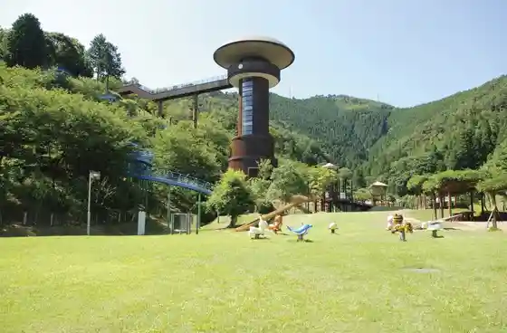
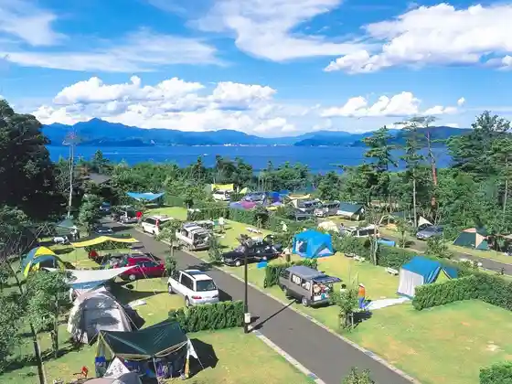

Erugaia Oi
Oi, Fukui · 0770-77-2144 · Official / source link
Fukuiken Kodomo Kazoku Kan
Oi, Fukui · 0770-77-3211 · Official / source link
Ki no Ko Forest
Oi, Fukui · 0770-78-1713 · Official / source link

Aka Sho Saki Oto Campground
Oi, Fukui · 0770-77-2800 · Official / source link

SEE SEA PARK
Oi, Fukui · 0770-77-4489 · Official / source link
Roadside Station Uminpia Oi
Oi, Fukui · 0770-77-4600 · Official / source link
Akaguri Umizuri Park
Oi, Fukui · 0770-77-4003 · Official / source link
Rentasaikuru - Oi − Wakasa Hongo Eki
Oi, Fukui · 0770-77-0026 · Official / source link
I Ashi Tera
Oi, Fukui · 0770-77-1078 · Official / source link
Wakasa Paru MAMIYA (Mamiya Shinju Yoshokujo)
Oi, Fukui · 0770-77-0432 · Official / source link
Akaguri Enchi
Oi, Fukui · 0770-77-2800 · Official / source link
Tsune Zendera
Oi, Fukui · 0770-77-2820 · Official / source link
Kamo Shrine
Oi, Fukui · 0770-77-2820 · Official / source link
Choraku Tera
Oi, Fukui · 0770-77-2820 · Official / source link
Kiyokumo Tera
Oi, Fukui · 0770-77-2820 · Official / source link
Roadside Station Natasho
Oi, Fukui · 0770-67-2255 · Official / source link
Fusha Hall (Wakasa Hongo Eki)
Oi, Fukui · 0770-77-1734 · Official / source link
Matsuki Shokichi Bijutsu Memorial Museum Kyodoshi Ryo Kan
Oi, Fukui · 0770-77-2820 · Official / source link
Jaku Shu Itteki Bunko
Oi, Fukui · 0770-77-2445 · Official / source link
Chon In
Oi, Fukui · 0770-77-0235 · Official / source link
no Shika Falls
Oi, Fukui · 0770-77-4056 · Official / source link
Akinai Kan
Oi, Fukui · 0770-67-2272 · Official / source link
Natasho Soba Tokoro Yottetsu Tei
Oi, Fukui · 0770-67-3788 · Official / source link
Oi Johoko Sa Ten Potaru
Oi, Fukui · 0770-77-3300 · Official / source link
Kurashi no Fukugo Shisetsu hibi
Oi, Fukui · 0770-59-1178 · Official / source link
Fudo no Taki Park
Oi, Fukui · 0770-77-4056 · Official / source link
Karida Hime Shrine
Oi, Fukui · 0770-77-2820 · Official / source link
Koyomi Hall
Oi, Fukui · 0770-67-2876 · Official / source link
Ikiiki Choju Village Amii Shan Oi
Oi, Fukui · 0770-77-3410 · Official / source link
Natasho no Sakura Namiki (Odayaka Sakura Namiki)
Oi, Fukui · Official / source link
Pure Park Oi
Oi, Fukui · 0770-77-2810 · Official / source link
Hachigamine Kazokuryoko Village
Oi, Fukui · 0770-67-2844 · Official / source link
Saburi Kawa Park
Oi, Fukui · 0770-77-1790 · Official / source link
Zukin Yama Seishonen Ryoko Village
Oi, Fukui · 0770-67-3000 · Official / source link
Nature Sho Tororo iheee
Oi, Fukui · 0770-67-3316 · Official / source link
Komatsu Shigemori Tsuka
Oi, Fukui · Official / source link
Oi Town Hall
Oi, Fukui · 0770-77-1111 · Official / source link